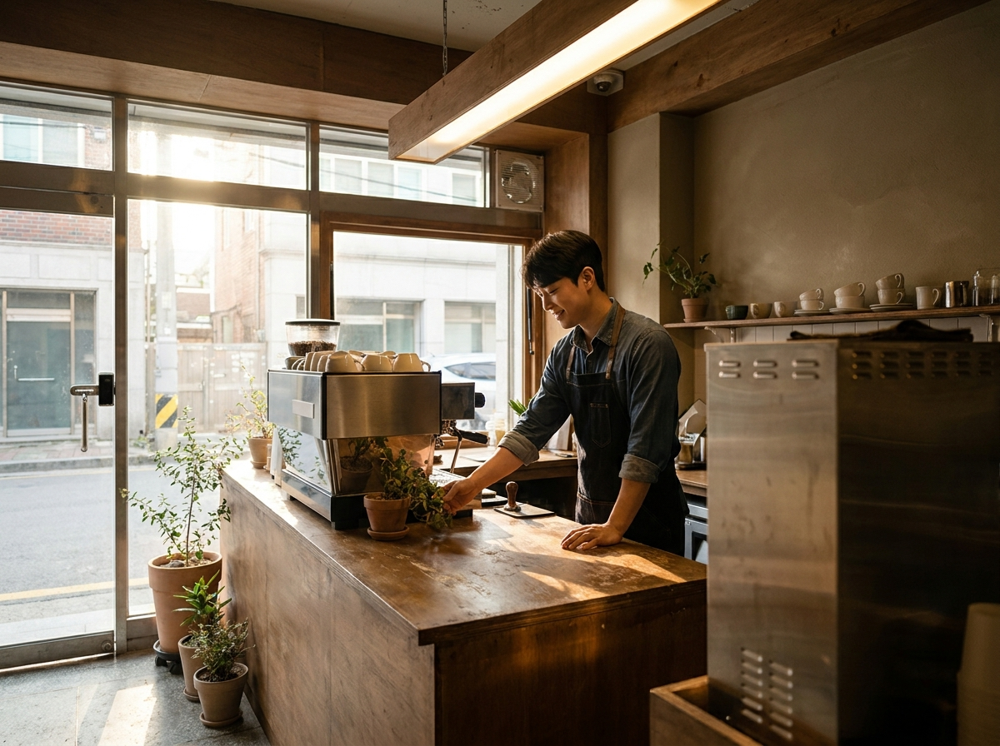
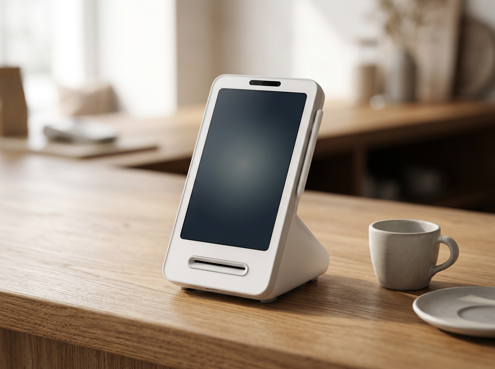
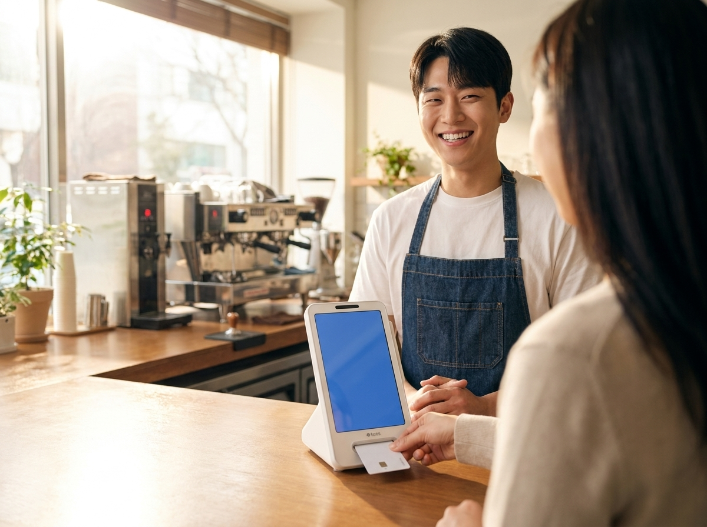

카페 창업, 카드단말기 뭘로 시작할까 — 가맹점 등록이 먼저, 기기는 약정 부담 없는 쪽부터
결론부터 말씀드리면 기기 모델을 제일 먼저 고민하실 필요가 없습니다. 카페 창업에서 결제 준비는 순서가 정해져 있습니다. 사업자등록과 영업신고가 끝나고, 카드사 가맹점 등록이 되어야 어떤 단말기든 개통이 됩니다. 기기 선택은 그다음 일입니다. 그리고 첫 매장이라면 초기 고정비를 키우는 선택보다 가볍게 시작해 매출이 자리 잡은 뒤 늘려가는 순서가 안전합니다. 그 기준에서 요즘 신규 카페 카운터에 가장 많이 올라가는 기기가 토스단말기입니다.

결제 준비는 네 단계로 끊어서 보세요
인테리어와 집기 견적을 보다 보면 결제는 늘 뒷순위로 밀립니다. 그런데 오픈 당일에 카드 결제가 되지 않으면 그날 장사는 손쓸 방법이 없습니다. 순서를 이렇게 끊어두시면 헷갈리지 않습니다.
첫째, 사업자등록입니다. 상호와 업태·종목, 개업일이 확정되어야 이후 절차가 진행됩니다. 둘째, 영업신고입니다. 카페는 취급 품목과 조리 방식에 따라 신고 구분이 달라질 수 있어 관할 지자체 위생 부서 확인이 필요합니다. 셋째, 카드사 가맹점 등록입니다. 카드사마다 심사 절차가 있고, 요구하는 서류와 처리 기간이 다를 수 있습니다. 넷째, 단말기 선정과 설치입니다.
여기서 한 가지만 짚어드리겠습니다. 가맹점 등록 요건과 필요 서류, 심사 기간, 수수료 체계는 카드사와 시점에 따라 달라집니다. 인터넷에 떠도는 글이나 지인 말씀만 믿고 준비하시면 오픈 일정이 흔들릴 수 있습니다. 국세청 홈택스, 여신금융협회, 각 카드사, 관할 지자체 등 공식기관에서 최신 기준을 직접 확인하시길 권합니다. 서류를 어디에 어떻게 접수하는지는 결제 대리점에 문의하시면 함께 챙겨드릴 수 있습니다.
일정도 여유를 두시는 편이 좋습니다. 오픈 직전에 몰아서 진행하면 서류 보완 한 번에 개통이 밀립니다. 매장 계약과 인테리어 일정이 잡히는 시점에 결제 쪽도 같이 문의해두시면 마음이 편합니다.
카페 카운터에는 어떤 기기가 올라가나요
카페는 매장 구조가 비교적 단순합니다. 주문과 결제가 카운터 한 곳에서 끝나고, 홀 동선이 짧습니다. 대신 손님 연령대가 낮아 간편결제 비중이 높고, 포장이나 배달을 함께 하시는 경우가 많습니다. 그래서 이동이 잦은 매장용 기기보다 카운터에 고정해두고 결제 수단을 폭넓게 받는 기기가 맞습니다.
| 구분 | 어떤 매장에 맞나 | 신규 카페 적합도 |
|---|---|---|
| 유선 카드단말기 | 카운터 고정, 인터넷·전화선 연결이 안정적인 매장 | 무난하지만 간편결제 대응 폭을 확인해야 함 |
| 무선 카드단말기 | 테이블 결제, 야외 부스, 이동 판매가 있는 매장 | 상시 카페 운영에는 필요도가 낮은 편 |
| 토스단말기 | 카드와 간편결제를 한 대로 받으려는 소규모 매장 | 처음 여는 카페에 부담이 적음 |
| 네이버단말기 | 네이버 예약·주문 유입을 함께 쓰는 매장 | 온라인 유입 비중이 크면 검토 |
| 포스 + 주변기기 | 메뉴가 많고 직원·정산 관리가 필요한 매장 | 매출이 자리 잡은 뒤 확장 단계 |
처음부터 포스 풀세트를 갖추실 필요는 없습니다. 좌석이 적고 메뉴가 정리된 카페라면 결제 기기 한 대로 시작해도 운영에 무리가 없습니다. 반대로 좌석이 많고 주문이 몰리는 구조라면 처음부터 포스나 테이블오더를 검토하시는 편이 낫습니다. 이 판단은 평수와 좌석 수, 예상 회전율을 보고 정하시면 됩니다.
처음 여는 카페에 토스단말기를 권하는 이유

첫째, 시작 부담이 낮습니다. 토스단말기는 월 0원·약정 없음 조건으로 시작하실 수 있습니다. 창업 초기에는 매출이 얼마나 나올지 예측이 어렵습니다. 긴 약정을 걸고 출발하면 나중에 매장 구성을 바꾸실 때 선택지가 좁아집니다.
둘째, 결제 수단 대응 폭입니다. 요즘 카페는 손님이 꺼내는 결제 방식이 제각각입니다. 실물 카드도 있고 삼성페이, 애플페이, 네이버페이, 카카오페이, 제로페이도 있습니다. 이걸 한 대에서 받으면 계산대 앞에서 헤매는 시간이 줄어듭니다. 회전이 빠른 카페일수록 이 차이가 크게 느껴집니다.

셋째, 조작이 단순합니다. 카페는 사장님과 아르바이트 직원이 같은 기기를 씁니다. 결제 취소나 매출 확인 같은 기본 동작이 쉬워야 실수가 줄고, 인수인계도 간단해집니다.
넷째, 설치와 사후 관리입니다. 기기는 어디서 사도 비슷해 보이지만, 문제가 생겼을 때 누가 오느냐에서 갈립니다. 저희는 수도권 직영 설치·관리로 운영합니다. 담당자가 직접 방문해 세팅하고, 이후 문의도 같은 창구에서 받습니다. 기기는 정품 신제품 보증으로 공급합니다. 9,400여 곳의 계약을 함께해 온 방식이 특별한 것은 아니고, 설치와 관리를 남에게 넘기지 않는다는 원칙 하나입니다.
나중에 좌석이 늘고 메뉴가 많아지면 그때 포스나 테이블오더, 키오스크를 얹으시면 됩니다. 주문·결제·정산 올인원 구성은 매출이 보이기 시작한 뒤에 검토하셔도 늦지 않습니다.
자주 묻는 질문(FAQ)
Q. 사업자등록 전에 카드단말기부터 신청해도 되나요?
상담과 기기 선정은 미리 진행하실 수 있습니다. 다만 실제 개통은 사업자등록과 카드 가맹점 등록이 정리되어야 가능합니다. 순서를 앞당기기보다, 서류 준비를 먼저 끝내두시고 기기 문의를 병행하시는 편이 빠릅니다.
Q. 카드 가맹점 등록은 얼마나 걸리나요?
카드사와 업종, 서류 상태에 따라 달라져서 기간을 하나로 말씀드리기 어렵습니다. 보완 요청이 한 번 오가면 그만큼 늘어납니다. 정확한 기준은 각 카드사와 여신금융협회 안내를 확인하시고, 오픈일 기준으로 여유를 두고 접수하시길 권합니다.
Q. 작은 카페인데 무선 단말기가 필요할까요?
좌석에서 결제를 받거나 야외 행사, 팝업 판매를 병행하실 계획이 아니라면 대체로 필요도가 낮습니다. 카운터 결제 위주라면 고정형 한 대로 충분한 경우가 많습니다. 매장 도면과 동선을 보시고 정하시면 됩니다.
Q. 나중에 포스로 바꾸면 처음 기기는 못 쓰게 되나요?
포스를 들이더라도 결제 단말기는 함께 쓰거나 보조 결제 수단으로 유지하는 경우가 많습니다. 그래서 처음에 약정 부담이 없는 구성으로 시작하시는 게 나중 선택을 편하게 만듭니다.
오픈 전에 한 번만 정리하시면 됩니다
정리하면 순서는 사업자등록, 영업신고, 카드 가맹점 등록, 그리고 기기 선정입니다. 기기는 첫 매장이라면 부담이 적은 쪽에서 출발하시고, 매출이 보이면 그때 확장하시면 됩니다. 카페 평수와 좌석 수, 포장·배달 비중만 알려주시면 어떤 구성이 맞을지 정리해 드리겠습니다. 비용은 매장 구성에 따라 달라져서 상담 시 안내드립니다. 수도권이라면 담당자가 직접 방문해 설치까지 마무리합니다.
- 📞 전화상담 1544-7754
- 🌐 홈페이지 nwpos.co.kr

📷 인스타그램 팔로우 instagram.com/nurinetworkspos

▶️ 유튜브 구독 youtube.com/@nurinetworks